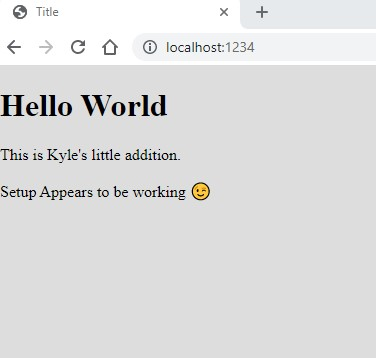

Week 9
Chapter 9
The window object is a global object. It is the browser the user is using. Can get dimensions of the screen, pages visited, and current page information.
THe window object is called the Browser Object Model or BOM for short.
All code using globes should use the window object. EX: x = 6; window.x === x; (true)
alert() is a window object . Confirm() can do the same thing. The promt() will ask for input. All these methods stop execution.
Window.history can show the history of URL to get to that page.
window.screen.hieght and window.screen width can give a user the size of he screen in pixels.
The DOM is also part of the window object.
document.cookie is part of the document object.
setTimeout() is used to schedule the execution of a fuction. See Example 1.
This method returns an integer that gives a reference to it, and can be accessed by clearTimeout(#).
setInterval() will work like setTimeout() but will repeat. See Example 2.
clearInterval(variable) will stop the repeat of setInterval().
Chapter 14
Geolocation API can get the current location of the user. It uses the navigator object. See Example 1.
THe altitude can be known with the position.altitudeAccuracy.
A web worker can act like running a different thread for running code.
Websocket can be used to get messages later after it has started. An example is a chat function between different computers.
window.notification can post notification to the browser window. Need permission to use.
Audio and Video can be used with the audio and video tags.
There are many other API's to use like the camera and battery status.
Modern Workflow
